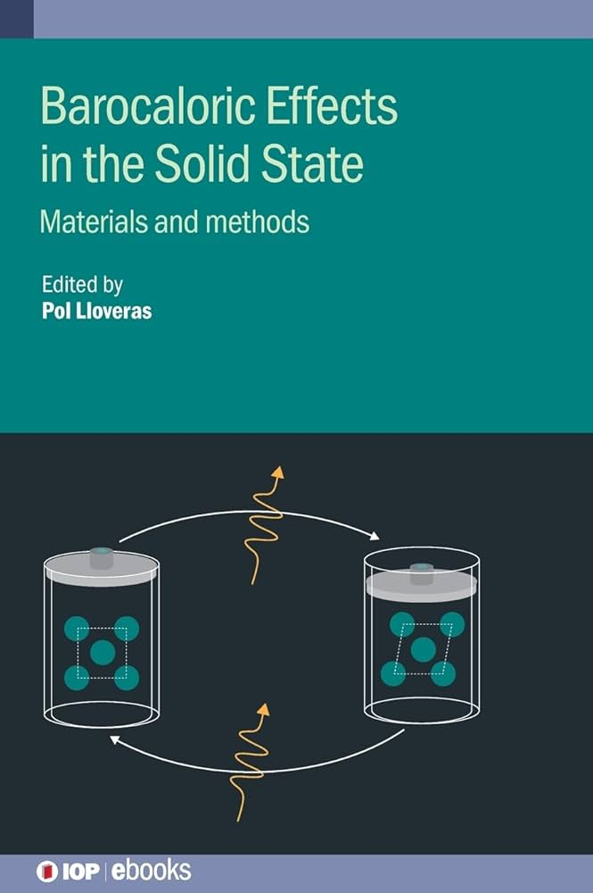
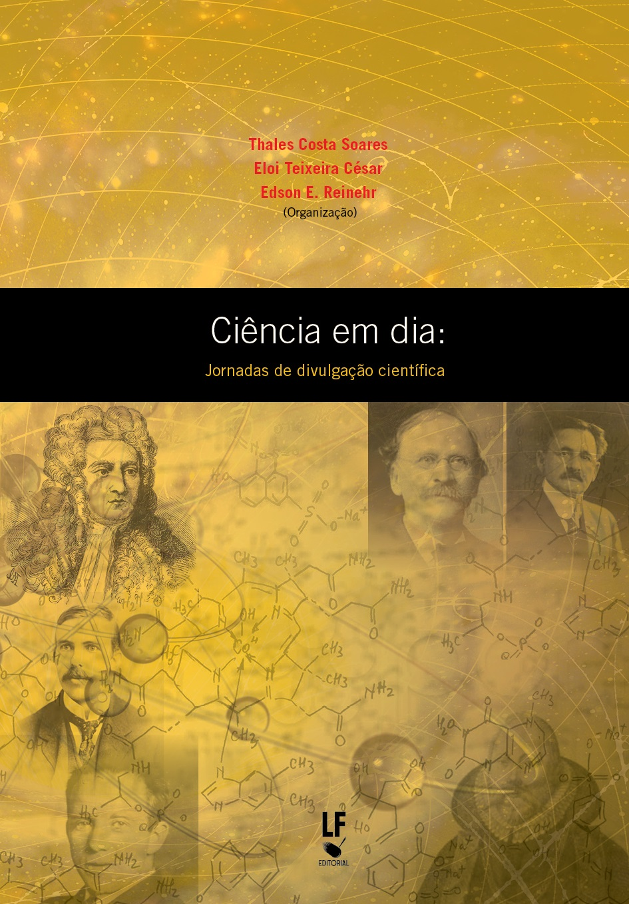
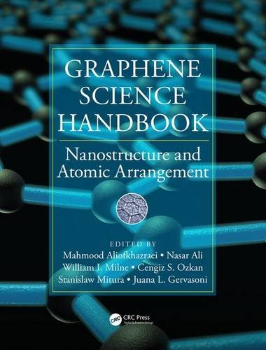

Pesquisa
Encontre aqui minha lista completa de publicações científicas.
Capítulos de livro

A. M. G. Carvalho, L. S. Paixão, W. Imamura
Capítulo: Barocaloric effects in polymers
Livro: Barocaloric effects in the solid state
Editora IOP Publishing - 2023
ISBN: 978-0-7503-4690-0
Capítulo: Barocaloric effects in polymers
Livro: Barocaloric effects in the solid state
Editora IOP Publishing - 2023
ISBN: 978-0-7503-4690-0

L. S. Paixão, C. Cruz, T. Costa-Soares
Capítulo: Refrigeração magnética
Livro: Ciência em dia: jornadas de divulgação científica
Editora Livraria da Física - 2016
ISBN: 9788578613785
Capítulo: Refrigeração magnética
Livro: Ciência em dia: jornadas de divulgação científica
Editora Livraria da Física - 2016
ISBN: 9788578613785

M. S. Reis, L. S. Paixão
Capítulo: Magnetocaloric effect of graphenes
Livro: Graphene Science Handbook: Nanostructure and Atomic Arrangement
Editora CRC Press - 2016
ISBN: 9781466591370
Capítulo: Magnetocaloric effect of graphenes
Livro: Graphene Science Handbook: Nanostructure and Atomic Arrangement
Editora CRC Press - 2016
ISBN: 9781466591370
Artigos publicados
2022
-
E. O. Usuda, J. R. Bocca, L. S. Paixão, F. C. Colman, E. Radovanovic, G. Fornazaro, A. M. G. Carvalho, C. S. Alves, S. L. Fávaro
Cooling with cork: envisaging its giant compressive mechanocaloric effect for solid-state cooling devices
Journal of Materials Science 57 (2022) 17700 - 17710
DOI: 10.1007/s10853-022-07749-w
2021
-
L. S. Paixão, E. O. Usuda, W. Imamura, A. M. G. Carvalho
High-field specific heat and entropy obtained from adiabatic temperature change
European Physical Journal Plus 136 (2021) 545
DOI: 10.1140/epjp/s13360-021-01538-1
2020
-
R. Torrão, R. J. Caraballo Vivas, B. Pimentel, M. C. Santos, L. S. Paixão, A. M. dos Santos, M. S. Reis, D. L. Rocco
Influence of the external pressure on the structure and magnetic properties of Nd0.5Sr0.5CoO3 cobaltite
Journal of Mmagnetism and Magnetic Materials 504 (2020) 166678
DOI: 10.1016/j.jmmm.2020.166678 -
W. Imamura, E. O. Usuda, L. S. Paixão, N. M. Bom, A. M. Gomes, A. M. G. Carvalho
Supergiant Barocaloric Effects in Acetoxy Silicone Rubber over a Wide Temperature Range: Great Potential for Solid-state Cooling
Chinese Journal of Polymer Science 38 (2020) 999 - 1005
DOI: 10.1007/s10118-020-2423-9 -
C. M. Miliante, A. M. Christmann, E. O. Usuda, W. Imamura, L. S. Paixão, A. M. G. Carvalho, A. R. Muniz
Unveiling the Origin of the Giant Barocaloric Effect in Natural Rubber
Macromolecules 53 (2020) 2606 - 2615
DOI: 10.1021/acs.macromol.0c00051 -
N. M. Bom, E. O. Usuda, M. da Silva Gigliotti, D. J. M. de Aguiar, W. Imamura, L. S. Paixão, A. M. G. Carvalho
Waste Tire Rubber-based Refrigerants for Solid-state Cooling Devices
Chinese Journal Of Polymer Science 38 (2020) 769 - 775
DOI: 10.1007/s10118-020-2385-y -
L. S. Paixão, G. Rangel, E. O. Usuda, W. Imamura, J. C. G. Tedesco, J. C. Patiño, A. M. Gomes, C. S. Alves, A. M. G. Carvalho
Magnetic and magnetocaloric properties of (Gd,Nd)5Si4 compounds
Journal of Magnetism and Magnetic Materials 493 (2020) 165693
DOI: 10.1016/j.jmmm.2019.165693
2019
-
E. O. Usuda, W. Imamura, N. M. Bom, L. S. Paixão, A. M. G. Carvalho
Giant reversible barocaloric effects in nitrile butadiene rubber around room temperature
ACS Applied Polymer Materials 1 (2019) 1991 - 1997
DOI: 10.1021/acsapm.9b00235
2018
-
W. Imamura, L. S. Paixão, E. O. Usuda, N. M. Bom, S. Gama, E. S. N. Lopes, A. M. G. Carvalho
i-Caloric Effects: a proposal for normalization
Book of Proceedings: Thermag VIII - International Conference on Caloric Cooling, 2018, Darmstadt. -
N. M. Bom, W. Imamura, E. O. Usuda, L. S. Paixão, A. M. G. Carvalho
Giant Barocaloric Effects in Natural Rubber: A Relevant Step toward Solid-State Cooling
ACS Macro Letters 7 (2018) 31 - 36
DOI: 10.1021/acsmacrolett.7b00744
2017
-
M. S. Reis, D. L. Rocco, R. J. Caraballo Vivas, B. Pimentel, N. R. Checca, R. Torrão, L. Paixão, A. M. dos Santos
Spin state and magnetic ordering of half-doped Nd0.5Sr0.5CoO3 cobaltite
Journal of Magnetism and Magnetic Materials 422 (2017) 197 - 203
DOI: 10.1016/j.jmmm.2016.08.080
2015
-
S. S. Pedro, R. J. Caraballo Vivas, V. M. Andrade, C. Cruz, L. S. Paixão, C. Contreras, T. Costa-Soares, L. Caldeira, A. A. Coelho, A. M. G. Carvalho, D. L. Rocco, M. S. Reis
Effects of Ga substitution on the structural and magnetic properties of half metallic Fe2MnSi Heusler compound
Journal of Applied Physics 117 (2015) 013902
DOI: 10.1063/1.4905173 -
Z. Z. Alisultanov, R. P. Meilanov, L. S. Paixão, M. S. Reis
Oscillating magnetocaloric effect in quantum nanoribbons
Physica E: Low-Dimensional Systems and Nanostructures 65 (2015) 44 - 50
DOI: 10.1016/j.physe.2014.08.012
2014
-
Z. Z. Alisultanov, L. S. Paixão, M. S. Reis
Oscillating magnetocaloric effect of a multilayer graphene
Applied Physics Letters 105 (2014) 232406
DOI: 10.1063/1.4903833 -
L. S. Paixão, Z. Z. Alisultanov, M. S. Reis
Oscillating adiabatic temperature change of 2D diamagnetic materials
Journal of Magnetism and Magnetic Materials 368 (2014) 374 - 378
DOI: 10.1016/j.jmmm.2014.06.010 -
L. S. Paixão, M. S. Reis
Mean field magnetization of gapped anisotropic multiplet
Physica B: Condensed Matter 442 (2014) 95 - 99
DOI: 10.1016/j.physb.2014.02.046 -
P. Brandão, A. M. dos Santos, L. S. Paixão, M. S. Reis
Synthesis, characterization and magnetic properties of a manganese (II) silicate containing frustrated S=5/2 zig-zag ladders
Journal of Solid State Chemistry 211 (2014) 130 - 135
DOI: 10.1016/j.jssc.2013.12.013
2011
-
M. ElMassalami, L. S. Paixão, F. A. B. Chaves
Resistivity studies on the layered semi-metallic CaAl2Si2: evaluating its temperature-, field- and pressure-dependence
Journal of Physics: Condensed Matter 23 (2011) 245701
DOI: 10.1088/0953-8984/23/24/245701